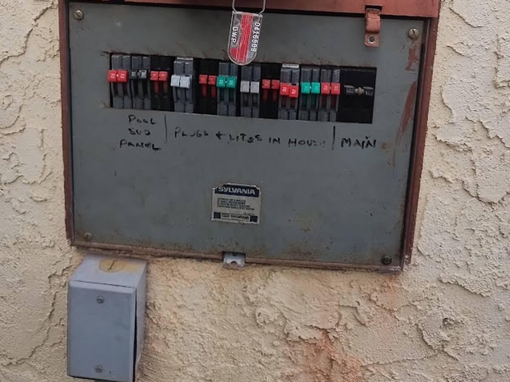

Sylvania & Zinsco Electrical Panel Replacement Guide
Many Los Angeles homeowners look at their electrical panel and see a badge reading "SYLVANIA". Learn why Sylvania panels are identical to Zinsco panels, the severe fire hazards they pose, and how AMY Electric replaces them safely.
Published: September 4, 2026 · Author: AMY Electric (Licensed C-10 #981578)
Is a Sylvania Electrical Panel the Same as a Zinsco Panel?
Yes. A common source of confusion for Los Angeles homeowners is the brand name on their panel. In 1973, GTE Sylvania purchased Zinsco Electrical Products. GTE Sylvania continued to manufacture and market the exact same panel enclosure, bus bar architecture, and breaker design under the Sylvania brand name throughout the 1970s and 1980s.
If your home was built or remodeled in Los Angeles during the 1970s or 1980s, you likely have a Sylvania main service panel or subpanel. Although it carries the Sylvania nameplate, internally it is a Zinsco design and suffers from the exact same documented hazards.

Real Sylvania Zinsco main service panel with color-coded breaker handles (red, green, black) prior to replacement by AMY Electric in Los Angeles.
The Specific Failure Mechanisms of Sylvania Zinsco Panels
Sylvania Zinsco panels have three primary design flaws that make them a major electrical safety hazard:
1. Aluminum Bus Bar Corrosion & Pitting
Zinsco and Sylvania panels utilized aluminum bus bars. Over decades of operation, the connection points between the breakers and the aluminum bar oxidize, pit, and corrode. Corrosion increases electrical resistance, producing extreme localized heat.
2. Breakers Welding directly to the Bus Bar
As the copper clips on the back of the breaker heat up on the pitted aluminum bus bar, they can melt and weld directly onto the bus bar itself. Once welded, the breaker can no longer trip mechanically during an overload or short circuit. Heavy current flows unchecked through house wiring, leading to electrical fires inside walls.
3. False Sense of Security
Even if a breaker handle appears to be in the "ON" position and everything seems to work normally, the internal mechanism may already be fused. You cannot tell if a Sylvania breaker will trip simply by looking at it.
Home Insurance & Real Estate Transaction Impacts
Because the fire risks of Sylvania and Zinsco panels are well-documented across the insurance industry:
- Policy Denials: Insurance providers in California frequently refuse to write new homeowner policies on houses with Sylvania or Zinsco panels.
- Escrow Demands: Home inspectors instantly flag Sylvania panels on inspection reports. Buyers often demand a full panel replacement credit or complete replacement prior to closing escrow.
How AMY Electric Replaces Sylvania Panels
At AMY Electric, we specialize in safely removing vintage Sylvania and Zinsco panels and upgrading your home to a reliable, modern 200A main service panel (Square D QO or Eaton BR):
- On-Site Hazard Assessment: We inspect your main panel, meter enclosure, and grounding system.
- LADBS Permitting: We pull all necessary electrical permits with the City of Los Angeles Department of Building and Safety.
- LADWP Utility Coordination: We coordinate temporary power disconnects and meter reconnects directly with LADWP.
- Full Panel Swap & Modernization: We install a modern 200A main breaker panel, brand-new AFCI/GFCI breakers, and proper grounding electrodes, followed by official city inspection sign-off.
Do You Have a Sylvania Panel in Your Home?
Don't risk electrical fire or insurance issues. AMY Electric offers free on-site panel replacement estimates throughout Los Angeles.
Call AMY Electric: (818) 302-5614